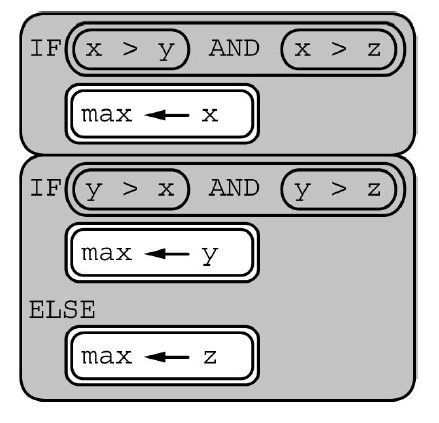

The following code segment is intended to set max equal to the maximum value among the integer variables x, y, and z. The code segment does not work as intended in all cases.

Which of the following initial values for x, y, and z can be used to show that the code segment does not work as intended?